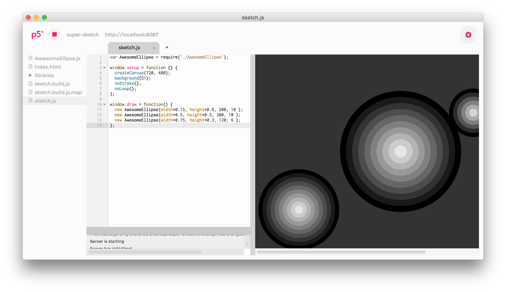

p5.js editor + browserify + browser sync
The p5.js Editor with some additions such as
- Code next to your sketch, no need for another browser window.
- Live reload thanks to browser sync, save any file and your sketch is reloaded for you.
- Real Chromium Developer Tools ( seperate window ).
- Local server address for external browser use ... if you so choose.
- Write modular code and bundle into one JS file with browserify
- .map file created for debugging.
Download Mac build
source